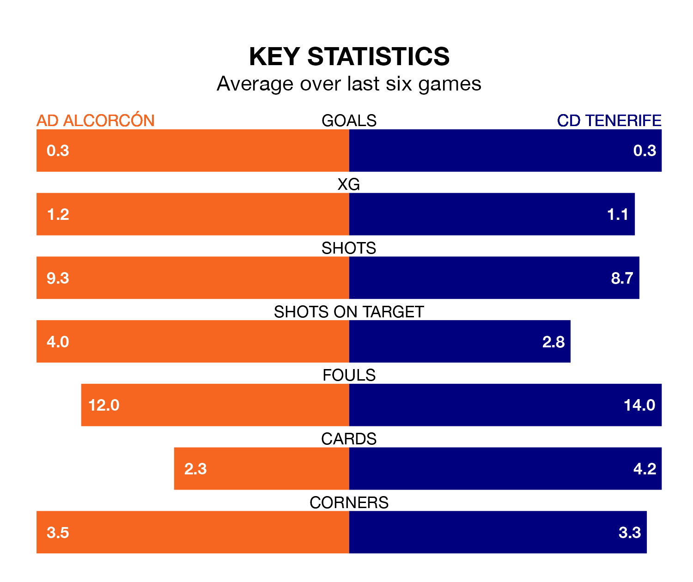

AD Alcorcón host CD Tenerife on Sunday at the Estadio Santo Domingo in the Segunda División.
In their last league match, on February 18, Alcorcón lost to Leganés 3-0 away.
Tenerife won, 1-0 at home against CD Eldense on Monday, with José León Bernal scoring their goals.
In Juan Soriano Oropesa, Tenerife can rely on one of the league's safest pair of hands. He has kept 12 clean sheets in his 27 appearances this season, and no 'keeper has prevented the opposition scoring more often in the Segunda División.
In Alcorcón's net, Lucas Nunes Anacker has five clean sheets in nine games.
The hosts are 20th in the table after 27 games, of which they have won seven and drawn seven, earning 28 points.
The away team are seven places ahead of Alcorcón in 13th, with 10 wins and six draws putting them on 36 points.
In the last 10 years, Alcorcón and Tenerife have played each other on 17 occasions. Alcorcón won three of them, Tenerife eight, and they drew six times.
On average, Alcorcón scored 0.8 goals and Tenerife 1.4 in those matches.
Their last meeting was on December 11, when Tenerife won 1-0 at home.
Alcorcón are in mixed form in the Segunda División, with two wins and two draws from their last six games.
With a win and two draws over that period, Tenerife's form is worse – they have taken five points from 18, compared to the home side's eight.
With 21 goals in 27 games so far this season, Alcorcón are the league's third-lowest scorers with 0.8 goals per game. And they are conceding more than average, letting in 37 goals at a rate of 1.4 per game.
Tenerife are also below average scorers, with 0.9 goals per game, compared to a league average of 1.1. They have also conceded 0.9 goals per game.
Updated: 10:08 (UTC), 23/02/24